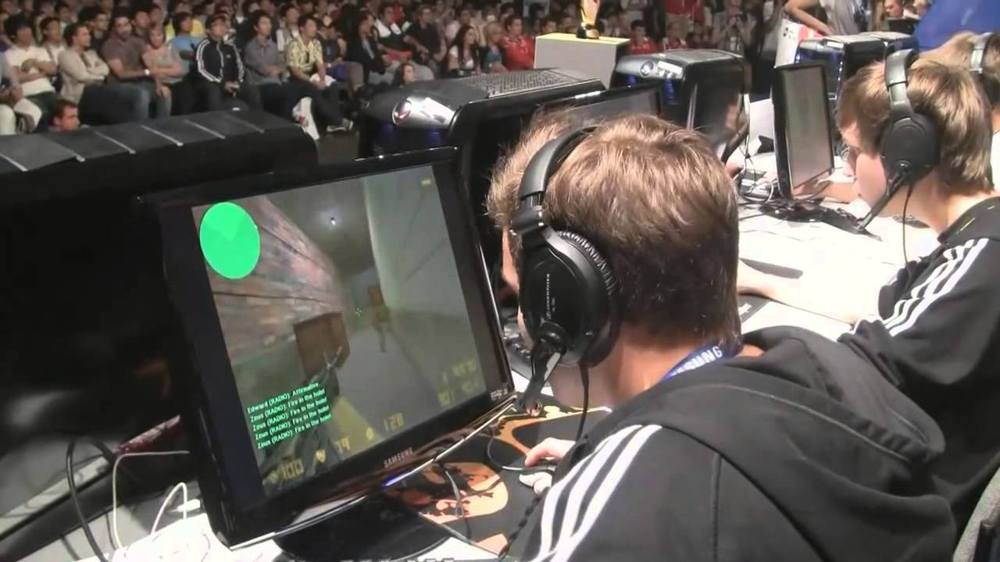

A kezdet
 A CounterStrike sorozat esportjának több mint 20 éves múltja van. A játék első verzióin már 2000-ben megkezdődött az esport, de az első nagyobb versenyt,
a CPL Wintert
csak 2001-ben Dallasban rendezték meg. A Ninjas in Pyjamas győzedelmeskedett és ezzel 150000 dollárt tudhattak magukévá. 2002-ben a
WCG, majd 2003-ban
ESWC is csatlakozott a Majorok
közé.
A CounterStrike sorozat esportjának több mint 20 éves múltja van. A játék első verzióin már 2000-ben megkezdődött az esport, de az első nagyobb versenyt,
a CPL Wintert
csak 2001-ben Dallasban rendezték meg. A Ninjas in Pyjamas győzedelmeskedett és ezzel 150000 dollárt tudhattak magukévá. 2002-ben a
WCG, majd 2003-ban
ESWC is csatlakozott a Majorok
közé.
Az első aranykor
A CPL 2008-ban megszűntette versenyit, de az ESL hozzáadta a CounterStrike-ot az IEM sorozathoz. Itt kisebb versenyek után a legjobbak 2019 óta Katowice-ben küzdöttek meg egymással. Ezek a versenyek 4 évig folytatódtak és ezt sokan a CounterStrike első aranykorának hivják,ekkor csatlakozott a játék az esport nagyágyui közé.
A csendes időszak
Amikor 2004-ben a Counter-Strike Source-ot kiadták, a közösség 2 felé osztódott. A Kompetitívek, az esportolók arra panaszkodtak, hogy a Sourceban kevesebbet számít a skill és nem voltak hajlandóak vele játszani. Emiatt 2000-től 2010-ig a Counter-Strike ismertsége lassan csökkent.
Az új korszak
 A CSGO kijöttével újraélesztette az esportot. Újra volt egy játék ami jól működött és amit mindenki szeretett. Először sokoan kritizálták a bugos játékmenet miatt, de néhány hónappal késöbb közel tökéletes lett a játék. 2013 Szeptember 16. a Valve bejelentett egy 250000 dollár nyereményű versenyt, az első CSGO Major bajnokságot. Ezt az "Arms Deal" update tette lehetőve, mert a játékosok többszáz skint tudtak venni és eladni. A valve az eladásból való bevétel több mint 13%-át megkapta így lett pénzük versenyt rendezni. Az első Major döntőt, a Dreamhack Wintert Svédországban 2013-ban rendezték meg. A valve által szponzorált versenyek lettek a CSGO legfontosabb versenyei.
| Verseny | Dátum | Főnyeremény | Hányan indultak | Verseny Helyszíne | 1. | 2. |
|---|---|---|---|---|---|---|
| PGL Major Stockholm | 2021 Oct 26 - Nov 7 | $2,000,000 | 24 | Stockholm | Natus Vincere | G2 Esports |
| Esl One: Rio | 2020 Nov 9 - 22 | Rio de Janeiro | ||||
| StarLadder Berlin Major | 2019 Aug 23 - Sep 8 | $1,000,000 | Berlin | Astralis | AVANGAR | |
| Intel Extreme Masters Katowice | 2019 Feb 13 - Mar 3 | Katowice | Astralis | ENCE | ||
| FACEIT Major: London | 2018 Sep 5 - 23 | London | Astralis | Natus Vincere | ||
| ELEAGUE Major: Boston | 2018 Jan 12 - 28 | 23 | Atlanta Boston |
Cloud9 | Faze Clan | |
| PGL Major Kraków | 2017 Jul 16 - 23 | 16 | Kraków | Gambit Esports | Immortals | |
| ELEAGUE Major: Atlanta | 2017 Jan 22 - 29 | Atlanta | Astralis | Virtus.pro | ||
| ESL One: Cologne | 2016 Jul 5 - 10 | Cologne | SK Gaming | Team Liquid | ||
| MLG Major Championship: Columbus | 2016 Mar 29 - Apr 3 | Columbus | Luminosity Gaming | Natus Vincere | ||
| DreamHack Open Cluj-Napoca | 2015 Oct 28 - Nov 1 | $250,000 | Cluj-Napoca | Team EnVyUs | Natus Vincere | |
| Esl One: Cologne | 2015 Aug 20 - 23 | Cologne | Fnatic | Team EnVyUs | ||
| Esl One: Katowice | 2015 Mar 12 - 15 | Katowice | Fnatic | Ninjas in Pyjamas | ||
| DreamHack Winter | 2014 Nov 27 - 29 | Jönköping | Team LDLC | Ninjas in Pyjamas | ||
| Esl One: Cologne | 2014 Aug 14 - 17 | Cologne | Ninjas in Pyjamas | Fnatic | ||
| ESL Major Series One Katowice | 2014 Mar 13 - 16 | Katowice | Virtus.pro | Ninjas in Pyjamas | ||
| DreamHack Winter | 2013 Nov 28 - 30 | Jönköping | Fnatic | Ninjas in Pyjamas | ||